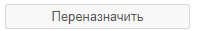

Сценарий работы инициатора задачи
Инициатор создает задачу и направляет ее исполнителю
Как создать карточку
Создать можно как новую карточку с пустыми полями, так и карточку
с уже заполненными полями используя шаблоны задач
или скопировать
существующую карточку. Создать новую карточку:
- на главном экране системы

- пункт меню «Задачи» – «Создать задачу»
- из списка задач «Создать» - «Новый»
- из списка шаблонов «Создать задачу»
- из другой карточки «Создать» - «На основании»
- С помощью сочетания клавиш Alt+T
- используя плагины
Действия инициатора
- Отправить исполнителю – запускает процесс работы над задачей, при этом необходимо назначить пользователей на нужные роли
- Завершить – завершает процесс работы над задачей, доступно после выполнения задачи исполнителем
- Выполнена – завершает выполнение задачи
- Вернуть на доработку – отправляет задачу на доработку исполнителю, доступно для задачи, выполненной исполнителем
- Отменить процесс – позволяет прервать процесс работы над задачей
Как переназначить задачу
Если исполнитель еще не выполнил задачу, инициатор может изменить исполнителя
нажав 
Как назначить задачу самому себе
В
списке задач нажмите "Создать" - "Самому себе"
В этом случае вы являетесь одновременно инициатором и исполнителем задачи
В этом случае вы являетесь одновременно инициатором и исполнителем задачи
Как завершить задачу
После того, как исполнитель и контролер закончили свои действия задачи, она
возвращается инициатору
для завершения
- Если инициатор принимает задачу, он завершает ее, и, соответственно, весь процесс
- Если же задача требует доработки, она возвращается исполнителю